Asymptotic Bode¶
Goal:
Express the frequency response of a system defined by a transfer function as piecewise linear funtions.
Preparations¶
import numpy as np
from sympy import *
from sympy.physics.control.lti import TransferFunction
from mathprint import *
import matplotlib.pyplot as plt
plt.rcParams.update({
"text.usetex": True,
"font.family": "Helvetica",
"font.size": 10,
})
Define variables that we are going to use repetitively: \(s\), \(t\) and \(\omega\). We also need to define specific prpoperties of the variables.
t = symbols('t' , real=True)
s = symbols('s' , complex=True)
omega = symbols('omega' , positive=True)
a, b = symbols('a b' , real=True)
c = symbols('c ' , complex=True)
zeta = symbols('zeta' , real=True)
omega_n = symbols('omega_n' , positive=True)
Asymptotic Bode Plots of Low-Order Transfer Functions¶
These are the fundamental steps that we must do to plot the frequence response (Bode plot) of a system defined by a transfer function \(H(s)\):
Do substitution: \(s = j \omega\)
Compute \(H(j \omega )\)
The result is a complex number:
Extract the magnitude: \( 20 \log_{10} \big| H(j\omega) \big| \)
Extract the the phase: \( \angle H(j \omega) \)
It is very easy to execute those steps by using a computer. On the other hand, when we simply want to sketch the Bode plot without using a computer, we can use the asymptotic method to draw the approximated version of the Bode plot.
Case 1: A pole at the origin of the s-plane¶
H1 = 1/s
mprint('H(s)=', latex(H1))
After the substitution, we then obtain:
Hjw = H1.subs(s, I*omega)
M1 = simplify(20 * log(Abs(Hjw), 10))
Phi1 = arg(Hjw)
mprint("M (\\omega) =", latex(M1))
mprint("\\phi ( \\omega ) =", latex(Phi1))
Magnitude plot¶
ylabel = '$ M ( \\omega ) $'
p1 = plot(M1, (omega, 0.01 , 100), size=(4, 2), ylabel=ylabel, show=True, xscale='log')
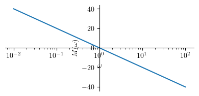
Phase plot¶
ylabel = '$\\phi ( \\omega ) $'
p2 = plot(Phi1, (omega, 0.01 , 100), size=(4, 2), ylabel=ylabel, show=True, xscale='log')
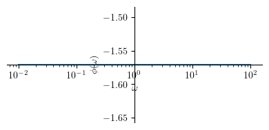
Case 2: A zero at the origin of the s-plane¶
H2 = s
mprint('H(s)=', latex(H2))
After the substitution, we then obtain:
Hjw = H2.subs(s, I*omega)
M2 = simplify(20 * log(Abs(Hjw), 10))
Phi2 = arg(Hjw)
mprintb("M (\\omega) =", latex(M2))
mprintb("\\phi ( \\omega ) =", latex(Phi2))
Magnitude plot¶
ylabel = '$M ( \\omega )$'
p1 = plot(M2, (omega, 0.01 , 100), size=(4, 2), ylabel=ylabel, show=True, xscale='log')
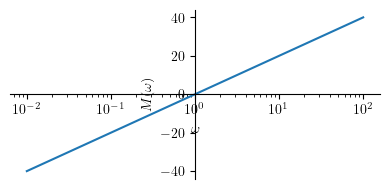
Phase plot¶
ylabel = '$\\phi ( \\omega ) $'
p2 = plot(Phi2, (omega, 0.01 , 100), size=(4, 2), ylabel=ylabel, show=True, xscale='log')
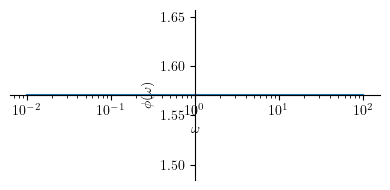
Case 3: A single real pole¶
H3 = 1/(s+a)
mprint('H(s)=', latex(H3))
After the substitution, we then obtain:
Hjw = H3.subs(s, I*omega)
M3 = simplify(20 * log(Abs(Hjw), 10))
Phi3 = arg(Hjw)
mprintb("M (\\omega) =", latex(M3))
mprintb("\\phi ( \\omega ) =", latex(Phi3))
Magnitude plot¶
Now, let us plot the results for both the magnitude and the phase. However, we must first set a numerical value for \(a\). Let us set \(a=1\).
Before that, let us write down the approximated version of the plots. What we do here is a bit based on observations.
a_ = 1
Mhat3 = Piecewise((-20 * log(a, 10), omega <= a),
(-20 * log(omega, 10), True))
mprintb("\\hat{ M } ( \\omega ) = ", latex(Mhat3))
ylabel = '$M ( \\omega )$'
p1 = plot(M3.subs(a, a_), (omega, a_/100 , 100*a_), size=(4, 2), ylabel=ylabel, show=False, xscale='log')
p2 = plot(Mhat3.subs(a, a_), (omega, a_/100 , 100*a_), show=False)
p1.append(p2[0])
p1.show()
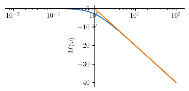
Phase¶
Phihat3 = Piecewise((0, omega <= 0.1*a),
(-pi/4 * log(omega/(0.1*a), 10) , omega < a*10),
(-pi/2, True))
mprintb("\\hat{ \\phi } ( \\omega ) = ", latex(simplify(Phihat3)))
ylabel = '$\\phi ( \\omega ) $'
p1 = plot(Phi3.subs(a, a_), (omega, a_/100 , 100*a_), size=(4, 2), ylabel=ylabel, show=False, xscale='log')
p2 = plot(Phihat3.subs(a, a_), (omega, a_/100 , 100*a_), show=False)
p1.append(p2[0])
p1.show()
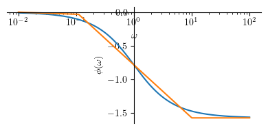
Case 4: A single real zero¶
H4 = s+a
mprint('H(s)=', latex(H4))
After the substitution, we then obtain:
Hjw = H4.subs(s, I*omega)
M4 = simplify(20 * log(Abs(Hjw), 10))
Phi4 = arg(Hjw)
mprint("M (\\omega) =", latex(M4))
mprint("\\phi ( \\omega ) =", latex(Phi4))
Magnitude plot¶
Now, let us plot the results for both the magnitude and the phase. However, we must first set a numerical value for \(a\). Let us set \(a=1\).
Before that, let us write down the approximated version of the plots. What we do here is a bit based on observations.
Mhat4 = Piecewise((20 * log(a, 10), omega <= a),
(20 * log(omega, 10), True))
mprintb("\\hat{ M } ( \\omega ) = ", latex(Mhat4))
ylabel = '$M ( \\omega )$'
p1 = plot(M4.subs(a, a_), (omega, a_/100 , 100*a_), size=(4, 2), ylabel=ylabel, show=False, xscale='log')
p2 = plot(Mhat4.subs(a, a_), (omega, a_/100 , 100*a_), show=False)
p1.append(p2[0])
p1.show()
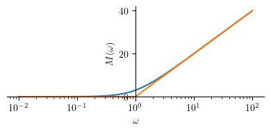
Phase plot¶
Phihat4 = Piecewise((0, omega <= 0.1*a),
(pi/4 * log(omega/(0.1*a), 10) , omega < a*10),
(pi/2, True))
mprintb("\\hat{ \\phi } ( \\omega ) = ", latex(simplify(Phihat4)))
ylabel = '$\\phi ( \\omega ) $'
p1 = plot(Phi4.subs(a, a_), (omega, a_/100 , 100*a_), size=(4, 2), ylabel=ylabel, show=False, xscale='log')
p2 = plot(Phihat4.subs(a, a_), (omega, a_/100 , 100*a_), show=False)
p1.append(p2[0])
p1.show()
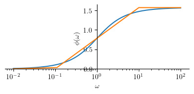
Case 5: Complex Conjugate Pole Pair¶
H5 = 1 / (s**2 + 2*zeta*omega_n*s + omega_n**2)
mprint('H(s)=', latex(H5))
By substituting \(s\) with \(j \omega\), we can obtain:
Hjw = H5.subs(s, I*omega)
M5 = expand_log(20 * log(Abs(Hjw), 10))
Phi5 = arg(Hjw)
mprint("M (\\omega) =", latex(M5))
mprint("\\phi ( \\omega ) =", latex(Phi5))
Resonance peak¶
Complex conjugate pole pair occurs when \(\zeta < 1\). When \(\zeta < 1\), the system is underdamped. Resonance peak appears in the Bode magnitude plot at \(\omega = \omega_n\). The magnitude at this resonance peak can be computed as:
Mp = M5.subs(omega, omega_n)
mprintb("M_p = ", latex(Mp))
Magnitude Plot¶
Now, let’s express the asymptotic Bode plot as piecewise functions. At the moment, we will do this by intuition.
Mhat5 = Piecewise((-40 * log(omega_n, 10), omega < omega_n),
(Mp, (omega >= omega_n) & (omega <= omega_n)),
(-40 * log(omega, 10), omega > omega_n))
mprintb("\\hat{ M } ( \\omega ) = ", latex(Mhat5))
For the actual plotting, we need to define some numerical values for:
omega_n_ = 1
zeta_ = [0.1, 0.2, 0.5] # plot for several values
ylabel = '$M ( \\omega )$'
p1 = plot(M5.subs(([omega_n, omega_n_],[zeta, zeta_[0]])), (omega, omega_n_/10 , 10*omega_n_), line_color='r', size=(5, 3), ylabel=ylabel, show=False, xscale='log', legend=True)
p2 = plot(M5.subs(([omega_n, omega_n_],[zeta, zeta_[1]])), (omega, omega_n_/10 , 10*omega_n_), line_color='b', show=False)
p3 = plot(M5.subs(([omega_n, omega_n_],[zeta, zeta_[2]])), (omega, omega_n_/10 , 10*omega_n_), line_color='g', show=False)
p4 = plot(Mhat5.subs(([omega_n, omega_n_],[zeta, zeta_[0]])), (omega, omega_n_/10 , 10*omega_n_), line_color='k', show=False)
p1[0].label = "$\\zeta=" + str(zeta_[0]) + "$"
p2[0].label = "$\\zeta=" + str(zeta_[1]) + "$"
p3[0].label = "$\\zeta=" + str(zeta_[2]) + "$"
p4[0].label = ""
p1.append(p2[0])
p1.append(p3[0])
p1.append(p4[0])
p1.show()
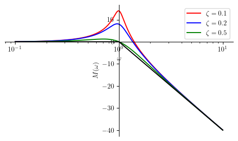
The general shape of the asymptotic magnitude plot is not affected by \(\zeta\).
Although we do have the resonance peak in the piecewise Bode, SymPy fails to plot the resonance peak for some technical reasons. However, we can still compute this peak value by using the equation expressed by \(M_p\):
print(Mp.subs(([omega_n, omega_n_],[zeta, zeta_[0]])).evalf()) # for zeta[0]
print(Mp.subs(([omega_n, omega_n_],[zeta, zeta_[1]])).evalf()) # for zeta[1]
print(Mp.subs(([omega_n, omega_n_],[zeta, zeta_[2]])).evalf()) # for zeta[2]
13.9794000867204
7.95880017344075
0
Phase plot¶
Phihat5 = Piecewise((0, omega <= (omega_n / 10**zeta)),
(-pi/(2*zeta) * log(omega/(10**(-zeta)*omega_n), 10) , omega < (omega_n*10**zeta)),
(-pi, True))
mprintb("\\hat{ \\phi } ( \\omega ) = ", latex(simplify(Phihat5)))
ylabel = '$\\phi ( \\omega ) $'
p1 = plot(Phi5.subs(([omega_n, omega_n_],[zeta, zeta_[0]])), (omega, omega_n_/10 , 10*omega_n_), line_color='r', size=(5, 3), ylabel=ylabel, show=False, xscale='log', legend=True)
p2 = plot(Phi5.subs(([omega_n, omega_n_],[zeta, zeta_[1]])), (omega, omega_n_/10 , 10*omega_n_), line_color='b', show=False)
p3 = plot(Phi5.subs(([omega_n, omega_n_],[zeta, zeta_[2]])), (omega, omega_n_/10 , 10*omega_n_), line_color='g', show=False)
p4 = plot(Phihat5.subs(([omega_n, omega_n_],[zeta, zeta_[0]])), (omega, omega_n_/10 , 10*omega_n_), line_color='k', show=False)
p5 = plot(Phihat5.subs(([omega_n, omega_n_],[zeta, zeta_[1]])), (omega, omega_n_/10 , 10*omega_n_), line_color='k', show=False)
p6 = plot(Phihat5.subs(([omega_n, omega_n_],[zeta, zeta_[2]])), (omega, omega_n_/10 , 10*omega_n_), line_color='k', show=False)
p1[0].label = "$\\zeta=" + str(zeta_[0]) + "$"
p2[0].label = "$\\zeta=" + str(zeta_[1]) + "$"
p3[0].label = "$\\zeta=" + str(zeta_[2]) + "$"
p4[0].label = ""
p5[0].label = ""
p6[0].label = ""
p1.append(p2[0])
p1.append(p3[0])
p1.append(p4[0])
p1.append(p5[0])
p1.append(p6[0])
p1.show()
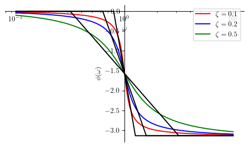
Case 6: Complex Conjugate Zero Pair¶
H6 = (s**2 + 2*zeta*omega_n*s + omega_n**2) / (omega_n**2)
mprint('H(s)=', latex(H6))
Hjw = H6.subs(s, I*omega)
M6 = simplify(20 * log(Abs(Hjw), 10))
Phi6 = arg(Hjw)
mprint("M (\\omega) =", latex(M6))
mprint("\\phi ( \\omega ) =", latex(Phi6))
Resonance Peak¶
Complex conjugate zero pair occurs when \(\zeta < 1\). Resonance peak appears in the Bode magnitude plot at \(\omega = \omega_n\). The magnitude at this resonance peak can be computed as:
Mp = M6.subs(omega, omega_n)
mprintb("M_p = ", latex(Mp))
Magnitude Plot¶
We first present the piecewise logarithmic representation of the asymptotic Bode plot. After that, we present the plot for several diffrent values for \(\zeta\).
Mhat6 = Piecewise((40 * log(omega_n, 10), omega < omega_n),
(Mp, (omega >= omega_n) & (omega <= omega_n)),
(40 * log(omega, 10), omega > omega_n))
mprintb("\\hat{ M } ( \\omega ) = ", latex(Mhat6))
ylabel = '$M ( \\omega )$'
p1 = plot(M6.subs(([omega_n, omega_n_],[zeta, zeta_[0]])), (omega, omega_n_/10 , 10*omega_n_), line_color='r', size=(5, 3), ylabel=ylabel, show=False, xscale='log', legend=True)
p2 = plot(M6.subs(([omega_n, omega_n_],[zeta, zeta_[1]])), (omega, omega_n_/10 , 10*omega_n_), line_color='b', show=False)
p3 = plot(M6.subs(([omega_n, omega_n_],[zeta, zeta_[2]])), (omega, omega_n_/10 , 10*omega_n_), line_color='g', show=False)
p4 = plot(Mhat6.subs(([omega_n, omega_n_],[zeta, zeta_[0]])), (omega, omega_n_/10 , 10*omega_n_), line_color='k', show=False)
p1[0].label = "$\\zeta=" + str(zeta_[0]) + "$"
p2[0].label = "$\\zeta=" + str(zeta_[1]) + "$"
p3[0].label = "$\\zeta=" + str(zeta_[2]) + "$"
p4[0].label = ""
p1.append(p2[0])
p1.append(p3[0])
p1.append(p4[0])
p1.show()
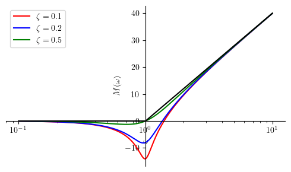
Phase plot¶
Similar to the prevoius section, we first present the piecewise logarithmic representation of the asymptotic Bode plot. After that, we present the plot for several diffrent values for \(\zeta\).
Phihat6 = Piecewise((0, omega <= (omega_n / 10**zeta)),
(pi/(2*zeta) * log(omega/(10**(-zeta)*omega_n), 10) , omega < (omega_n*10**zeta)),
(pi, True))
mprintb("\\hat{ \\phi } ( \\omega ) = ", latex(simplify(Phihat6)))
ylabel = '$\\phi ( \\omega ) $'
p1 = plot(Phi6.subs(([omega_n, omega_n_],[zeta, zeta_[0]])), (omega, omega_n_/10 , 10*omega_n_), line_color='r', size=(5, 3), ylabel=ylabel, show=False, xscale='log', legend=True)
p2 = plot(Phi6.subs(([omega_n, omega_n_],[zeta, zeta_[1]])), (omega, omega_n_/10 , 10*omega_n_), line_color='b', show=False)
p3 = plot(Phi6.subs(([omega_n, omega_n_],[zeta, zeta_[2]])), (omega, omega_n_/10 , 10*omega_n_), line_color='g', show=False)
p4 = plot(Phihat6.subs(([omega_n, omega_n_],[zeta, zeta_[0]])), (omega, omega_n_/10 , 10*omega_n_), line_color='k', show=False)
p5 = plot(Phihat6.subs(([omega_n, omega_n_],[zeta, zeta_[1]])), (omega, omega_n_/10 , 10*omega_n_), line_color='k', show=False)
p6 = plot(Phihat6.subs(([omega_n, omega_n_],[zeta, zeta_[2]])), (omega, omega_n_/10 , 10*omega_n_), line_color='k', show=False)
p1.append(p2[0])
p1.append(p3[0])
p1.append(p4[0])
p1.append(p5[0])
p1.append(p6[0])
p1[0].label = "$\\zeta=" + str(zeta_[0]) + "$"
p2[0].label = "$\\zeta=" + str(zeta_[1]) + "$"
p3[0].label = "$\\zeta=" + str(zeta_[2]) + "$"
p4[0].label = ""
p5[0].label = ""
p6[0].label = ""
p1.show()
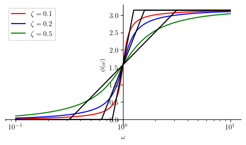
Summary¶
Finally, let us summarize all boxed formulas.
from pandas import DataFrame
from IPython.display import Markdown
def makelatex(args):
return ["${}$".format(latex(a)) for a in args]
desc = ["A pole at the origin",
"A zero at the origin",
"A single real pole",
"A single real zero",
"A Complex Conjugate Pole Pair",
"A Complex Conjugate Zero Pair"]
Hs = [H1, H2, H3, H4, H5, H6]
Ms = [M1, M2, Mhat3, Mhat4, Mhat5, Mhat6]
Phis = [Phi1, Phi2, Phihat3, Phihat4, Phihat5, Phihat6]
dic = {'$H(s)$': makelatex(Hs),
'$M( \\omega )$': makelatex(Ms),
'$\\phi( \\omega )$': makelatex(Phis)}
df = DataFrame(dic)
Markdown(df.to_markdown(index=False))
\(H(s)\) |
\(M( \omega )\) |
\(\phi( \omega )\) |
|---|---|---|
\(\frac{1}{s}\) |
\(- \frac{20 \log{\left(\omega \right)}}{\log{\left(10 \right)}}\) |
\(- \frac{\pi}{2}\) |
\(s\) |
\(\frac{20 \log{\left(\omega \right)}}{\log{\left(10 \right)}}\) |
\(\frac{\pi}{2}\) |
\(\frac{1}{a + s}\) |
\(\begin{cases} - \frac{20 \log{\left(a \right)}}{\log{\left(10 \right)}} & \text{for}\: a \geq \omega \\- \frac{20 \log{\left(\omega \right)}}{\log{\left(10 \right)}} & \text{otherwise} \end{cases}\) |
\(\begin{cases} 0 & \text{for}\: \omega \leq 0.1 a \\- \frac{\pi \log{\left(\frac{10.0 \omega}{a} \right)}}{4 \log{\left(10 \right)}} & \text{for}\: \omega < 10 a \\- \frac{\pi}{2} & \text{otherwise} \end{cases}\) |
\(a + s\) |
\(\begin{cases} \frac{20 \log{\left(a \right)}}{\log{\left(10 \right)}} & \text{for}\: a \geq \omega \\\frac{20 \log{\left(\omega \right)}}{\log{\left(10 \right)}} & \text{otherwise} \end{cases}\) |
\(\begin{cases} 0 & \text{for}\: \omega \leq 0.1 a \\\frac{\pi \log{\left(\frac{10.0 \omega}{a} \right)}}{4 \log{\left(10 \right)}} & \text{for}\: \omega < 10 a \\\frac{\pi}{2} & \text{otherwise} \end{cases}\) |
\(\frac{1}{\omega_{n}^{2} + 2 \omega_{n} s \zeta + s^{2}}\) |
\(\begin{cases} - \frac{40 \log{\left(\omega_{n} \right)}}{\log{\left(10 \right)}} & \text{for}\: \omega < \omega_{n} \\- \frac{10 \log{\left(4 \omega_{n}^{4} \zeta^{2} \right)}}{\log{\left(10 \right)}} & \text{for}\: \omega \leq \omega_{n} \\- \frac{40 \log{\left(\omega \right)}}{\log{\left(10 \right)}} & \text{otherwise} \end{cases}\) |
\(\begin{cases} 0 & \text{for}\: \omega \leq 10^{- \zeta} \omega_{n} \\- \frac{\pi \log{\left(\frac{10^{\zeta} \omega}{\omega_{n}} \right)}}{2 \zeta \log{\left(10 \right)}} & \text{for}\: \omega < 10^{\zeta} \omega_{n} \\- \pi & \text{otherwise} \end{cases}\) |
\(\frac{\omega_{n}^{2} + 2 \omega_{n} s \zeta + s^{2}}{\omega_{n}^{2}}\) |
\(\begin{cases} \frac{40 \log{\left(\omega_{n} \right)}}{\log{\left(10 \right)}} & \text{for}\: \omega < \omega_{n} \\\frac{10 \log{\left(4 \zeta^{2} \right)}}{\log{\left(10 \right)}} & \text{for}\: \omega \leq \omega_{n} \\\frac{40 \log{\left(\omega \right)}}{\log{\left(10 \right)}} & \text{otherwise} \end{cases}\) |
\(\begin{cases} 0 & \text{for}\: \omega \leq 10^{- \zeta} \omega_{n} \\\frac{\pi \log{\left(\frac{10^{\zeta} \omega}{\omega_{n}} \right)}}{2 \zeta \log{\left(10 \right)}} & \text{for}\: \omega < 10^{\zeta} \omega_{n} \\\pi & \text{otherwise} \end{cases}\) |